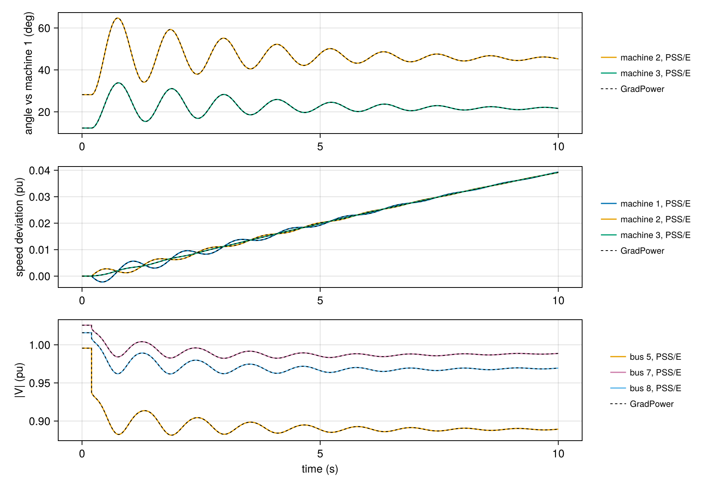
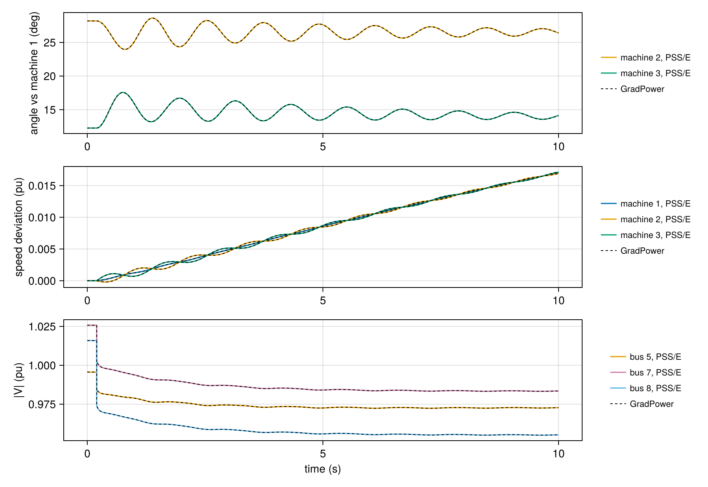
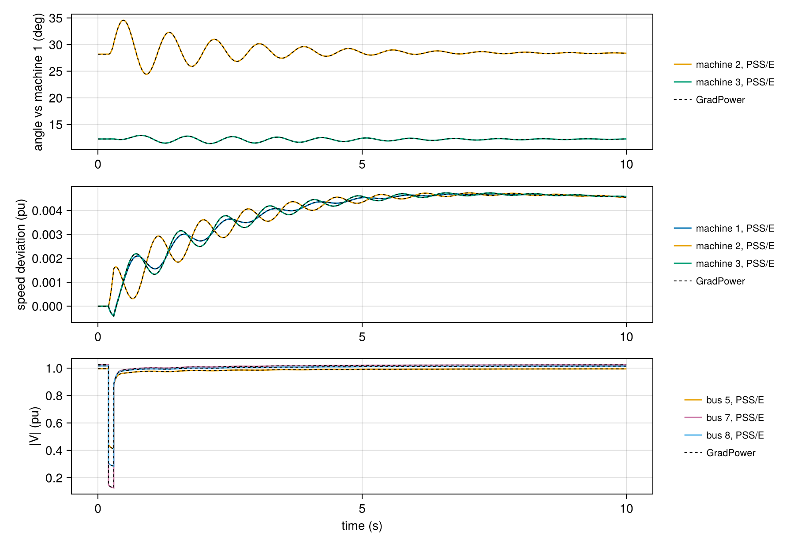

PSS/E validation
GradPower's dynamic models are checked against trajectories exported from PSS/E 35. The same comparison runs in the test suite (test/psse_reference/), so the results on this page are recomputed with the current code every time the documentation is built.
Setup
| reference | PSS/E 35.0.0 RC5, trajectories exported at 1/1920 s |
| network | IEEE 9-bus (WSCC), test/psse_reference/data/ieee9_v33.raw |
| machines | three GENROU, no exciter or governor (ieee9_ctrl.dyr) |
| power flow | reactive limits not enforced, as in the PSS/E run |
| GradPower | mech_input = :power, Crank–Nicolson, step 1/1920 s, 10 s |
mech_input = :power makes the swing equation divide the mechanical input by speed, as PSS/E does (see Supported models). With the default :torque form, these cases differ from PSS/E by 18–30 % in speed, because nothing damps the frequency drift when there is no governor.
| case | event |
|---|---|
i9_ctrl_trip57 | line 5–7 opened at 0.2 s |
i9_ctrl_trip89 | line 8–9 opened at 0.2 s |
i9_ctrl_flt7 | fault at bus 7 (r = 0.01 pu), applied at 0.2 s, cleared at 0.3 s |
Metrics
Each metric is the largest difference over the 10 s run:
- angle: change in each machine's angle relative to machine 1, as % of PSS/E's largest swing;
- speed: change in speed deviation, as % of PSS/E's largest change;
- voltage: bus voltage magnitude after the event, in pu.
Speed and voltage leave out 0.05 s around each switching instant, where the two programs resolve the discontinuity differently.
Results
rows = [@sprintf("| `%s` | %.2f %% | %.2f %% | %.1e |", tag, runs[tag].m["angle_pct"],
runs[tag].m["speed_pct"], runs[tag].m["v_err"]) for tag in cases]
Markdown.parse(join(["| case | angle | speed | voltage (pu) |", "|:--|--:|--:|--:|", rows...], "\n"))| case | angle | speed | voltage (pu) |
|---|---|---|---|
i9_ctrl_trip57 | 0.04 % | 0.01 % | 1.9e-05 |
i9_ctrl_trip89 | 0.12 % | 0.02 % | 3.0e-05 |
i9_ctrl_flt7 | 0.11 % | 0.06 % | 2.9e-05 |
The test suite fails if any case exceeds angle 0.5 %, speed 0.25 % or voltage 5e-4 pu. In the plots, colored lines are PSS/E and dashed black lines are GradPower.
Line 5–7 trip
compare_plot(runs["i9_ctrl_trip57"])
Line 8–9 trip
compare_plot(runs["i9_ctrl_trip89"])
Fault at bus 7
compare_plot(runs["i9_ctrl_flt7"])